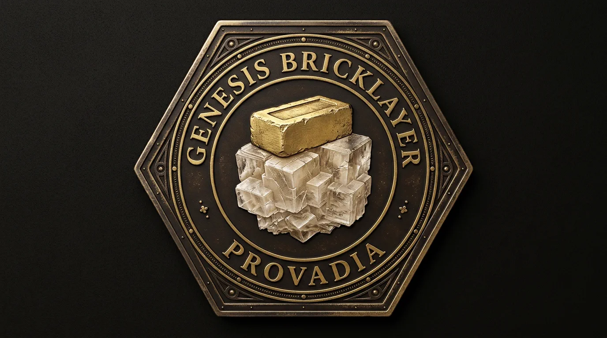

A mark is struck once, in the open, and it is never struck again.
This chamber is where the Genesis Bricklayer Collectible will be born: an edition of 470 numbered pieces on Metaplex Core, free to founding members who pass the town's three locks, struck one by one in a short ceremony kept by Solnik, the town's Keeper. The collectible is a commemorative mark of early citizenship — the citizenship itself is a separate thing, and the two are never confused here.
The chamber is built. The ceremony is not live. What stands below is the whole machine at rest — the specimen, the three beats, and the birth certificate — shown exactly as it will run, with every gate honestly closed.
MainnetSealed — false
MintingSealed
ClaimsClosed
Edition struck0 of 470
The KeeperOff watch
The Seal artworkJudged — in place
Nothing on this page can mint, claim, or reserve anything. When the gates open, this page will say so in the same plain words — and not one hour before.
Genesis · The Specimen
Specimen #000 — The Pattern Piece
The Seal — not yet struck
The master's artwork is in production. It will be judged before it is struck, and this frame will hold it the hour it passes. Nothing stands here in its place, and nothing ever will.

Specimen
Specimen — preview only
Genesis Bricklayer #000 / 470
This is the pattern piece: the shape of the collectible and of its ceremony, struck in no metal and on no chain. The edition itself runs #001–#470; #000 is not one of the 470, can never be minted, claimed, sold, or held — by anyone, ever.
It stands here so that every founder can inspect the whole ceremony before a single real piece exists: what the seal will look like when its artwork lands, what the certificate will say, and — just as plainly — what it will never say.
Serial
#000 / 470 — specimen, outside the edition
Status
Not minted · not mintable · not an asset
Artwork
The Genesis Seal — judged master, in the seal frame in this alcove
Entitlements
NONE — Commemorative Mark Only
Genesis · The Ceremony
Three Beats, Walked at Rest
When the founder opens the gates, each claim is a short ceremony in three beats, kept by Solnik. Until then the chamber runs as a preview: the beats are walked through at rest, exactly as they will happen — no live claim, no simulated mint, nothing performed that has not truly occurred.
Beat I
The Gathering
The Bricklayer whose three locks have opened is received at the striking bench. The town's coin turns slowly at the centre of the chamber, and the Keeper reads the terms aloud — the same honesty notice printed on this page, word for word, before anything is struck.
At rest — awaits the Keeper on watch
Beat II
The Striking
Golden particles spiral from the coin's core and solidify into the hexagonal Seal beside the Keeper's hand. Upon it is struck the collectible's own serial — drawn by lot from a shuffled pool of the 470, never in joining order, so that no mint can ever reveal when its holder came to town.
At rest — the press is cold
Beat III
The Certificate
The Keeper reads the Birth Certificate and hands it over: the piece's serial, its artwork, its mint date, and its provenance — the public facts of the collectible, and nothing of the person. The piece then lives in its holder's own wallet, theirs to keep or to pass on.
At rest — no certificate has been issued
The claim gate opens only when all of this is true: the devnet rehearsal has passed its seven privacy, security and separation tests · the Seal artwork has been judged and struck · the founder has inspected the ceremony himself and spoken the word. Until then this button does nothing, on purpose.
Genesis · The Birth Certificate
The Certificate of Specimen #000
Every struck piece receives a Birth Certificate in this exact form. It carries the collectible's public facts only — the same facts its on-chain metadata will carry, no more. This is the specimen's certificate, filled in with the specimen's true state.
Birth Certificate · Provadia
Name
PROVADIA Genesis Bricklayer #000/470 — SPECIMEN
Edition serial
000 — the specimen; the edition runs 001–470
Artwork
The Genesis Seal — judged master artwork; its SHA-256 is entered here at striking, and not before
Mint date
Not struck — no mint has occurred
Struck on
No chain — mainnet is sealed
Ownership history
None — the specimen is not an asset; it has never been held, sold, or transferred
Entitlements
NONE — Commemorative Mark Only
Related universe token
9UE6NStA9pRZ5xagrK1FNy3vybmQVL2VaKB7BNpvpump
What this certificate will never carry: a Bricklayer membership number, a name, a handle, an account date. A citizen's number lives only in the town's protected registry — it is never printed here, never placed on-chain, and never carried by any share card. A sale of the collectible moves the piece and its public history; it moves nothing about any person.
The Genesis Bricklayer Collectible is a free, numbered commemorative mark of early town membership. It carries no financial value, no gold ownership or redemption, no yield, and no voting or membership rights.
Genesis · Two Things, Kept Apart
Citizenship Is Not the Collectible
Citizenship
The Bricklayer record: a citizen's standing in the town — their place in the registry, their voice in the Forum, their vote on the Golden Wall's fate. It is bound to the member account alone. It is permanent and non-transferable: it cannot be sold, given away, or lost in a trade, and it is never displayed on this page or on any chain.
The Collectible
The Genesis piece: a numbered artifact in a wallet, fully transferable like any collectible. If it is ever sold, the piece travels with its public history — serial, artwork, mint date, ownership — and nothing else moves: not the seller's citizenship, not their standing, not their vote; and the buyer gains the artifact and no town rights at all.
Genesis · The Gates
How a Claim Will Work — When It Opens
The Three Locks
A claim opens only for a member who holds all three: a verified membership · a completed qualifying period of seven days · and a first genuine deed in the town. One collectible per member, ever.
The Shuffled Pool
Serials are not handed out in order. The 470 numbers sit in a cryptographically shuffled pool in the protected registry, and each claim draws the next by lot — an early citizen may draw #318 while a later one draws #042. Mint order can therefore never betray joining order.
The Edition Lock
The edition closes forever when the 470th piece is struck or on the coin's first birthday, 2027-11-18 — whichever comes first. The mint authority is then revoked, and no 471st piece can ever exist.
The Relayer
Claims are delivered by a dedicated relayer wallet that holds no more than 0.25 SOL, is separate from the founder's and the town's wallets, and is authorised for distribution only — it cannot expand the edition, move funds, or touch the collection.
Tonight, the ceremony is being rehearsed on devnet — play money only — against seven privacy, security and separation tests: zero private data in the metadata, serial unlinkability, public-payload leak checks, the relayer fence, the exact 470 cap, mid-ceremony disconnect recovery, and post-sale citizenship separation. Mainnet stays sealed until every test passes and the founder gives the word himself.